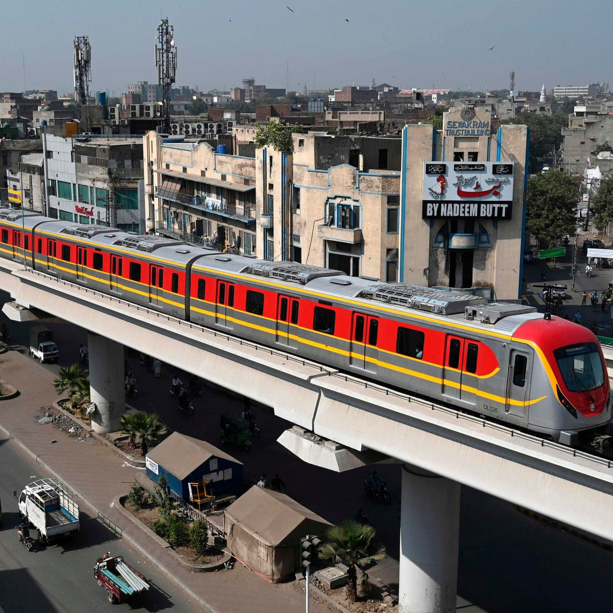
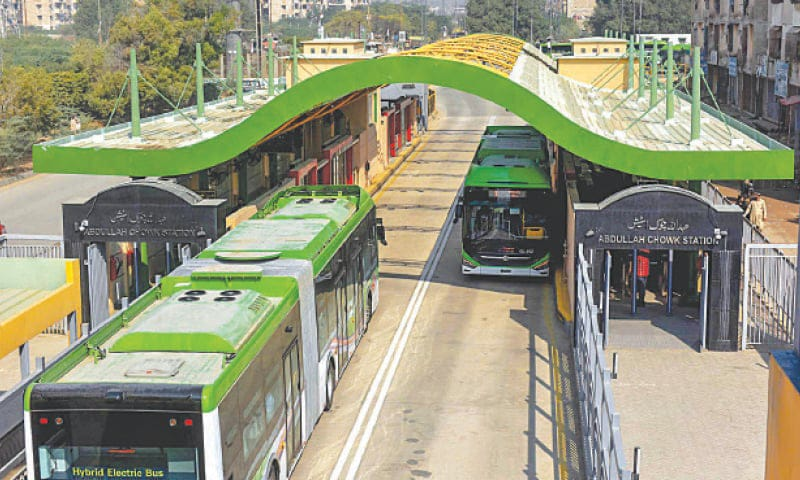
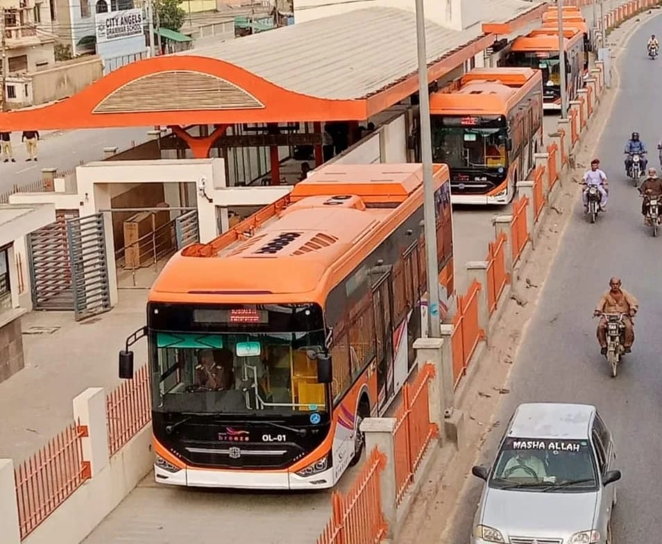
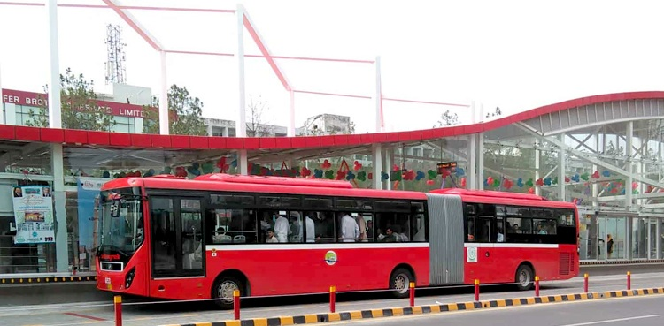

Government transport in Pakistan primarily consists of buses and trains operated by state-owned entities. Pakistan Railways is the national railway system, connecting major cities and towns across the country. It offers a cost-effective and relatively reliable mode of transportation. Additionally, Pakistan's road network is served by various government-operated bus services, including Pakistan Road, which provide convenient inter-city and intra-city travel options for commuters. While challenges like maintenance and modernization persist, these government transport options remain integral to the country's transportation infrastructure.
The "Green Line" in Pakistan typically refers to a high-profile bus service operating in the city of Karachi. Launched in 2015, it aims to provide a more efficient and comfortable public transportation option for residents of Karachi, which is one of the largest and most densely populated cities in Pakistan. The Green Line bus service covers a designated route, offering air-conditioned buses with modern amenities, dedicated bus lanes, and stations for boarding and disembarking, thus alleviating some of the city's traffic congestion and improving the overall commuting experience for its passengers.
The Orange Line is a rapid transit system in Lahore, Pakistan, consisting of an elevated train track and associated infrastructure. It spans approximately 27 kilometers and connects various key locations in Lahore, including important commercial, residential, and educational areas. The Orange Line aims to alleviate traffic congestion, reduce travel time, and provide a more efficient mode of public transportation for the residents of Lahore. It is a significant step towards modernizing the city's transportation infrastructure and improving urban mobility.
The Metro Bus in Pakistan is a modern, efficient urban transportation system that operates in major cities like Lahore, Islamabad, and Rawalpindi. It consists of dedicated bus lanes, high-capacity buses, and well-maintained stations. This system significantly reduces traffic congestion and provides a convenient, reliable mode of public transportation for thousands of commuters daily. It has become an integral part of the urban transit network, enhancing connectivity and accessibility for residents and visitors alike.
 Government of Pakistan
Government of Pakistan
 Government Services Portal
Government Services Portal